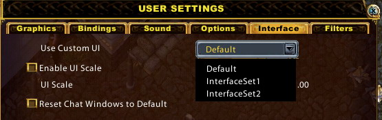

| Getting Started | |
| Basics | To modify your interface, you simply need to modify existing lua/xml files or create your own lua/xml files in .\UserInterface folder. |
| Multiple UI Sets | You can also save multiple UI sets into different folders. |
| Add new lua or xml files | Interface.lua and Interface.xml are the entry point for the interface system. |
To modify your interface, you simply need to modify existing lua/xml files or create your own lua/xml files in .\UserInterface folder.
First, unzip file .\UserInterface\Default.zip which will create folder .\UserInterface\Default.
Next, modify any lua or xml files under this folder. The modified files will override the default interface files stored in UO SA Client.
Finally, delete the lua/xml files you did NOT modify.
You can also save multiple UI sets into different folders. For example, you can create .\UserInterface\Interface1 and .\UserInterface\Interface2 folders. Each folder contains a different UI Sets. Then by choosing custom UI folder in the Main menu of UO SA Client, you can set which UI set to use.
